AI Academy · Level 1 · Grade 6 · Week 30 · Student lesson
Choose Inputs and Outputs
Learn to understand, design, build, test and explain AI systems responsibly.
Project: Helpful Classroom Sorter
Before you start
Weeks 2 and 16: specify an information path and an uncertainty response.
Plan time to read, investigate and explain. Keep predictions separate from observations.
Student lesson · 1 of 16
Your mission
Your learning target
I can turn the project outcome into precise input and output requirements.
I can apply a simple manual baseline to valid requests and record its results.
I can plan a fair comparison using the same catalogue, requests and judging rules.
Remember before reading
Close your notes first. A rough first answer helps us choose the right starting point; it is not a score for your ability.
Without opening the old lesson, explain one key idea from Find a Real Problem. Give an example and a mistake that the idea helps you avoid.
Without opening the old lesson, explain one key idea from Verify Important Outputs. Give an example and a mistake that the idea helps you avoid.
Without opening the old lesson, explain one key idea from Privacy by Choosing Less. Give an example and a mistake that the idea helps you avoid.
After trying, check the relevant lesson or ask your teacher. Change the part of your explanation that the evidence shows was wrong.
A useful design makes required information and promised result explicit.
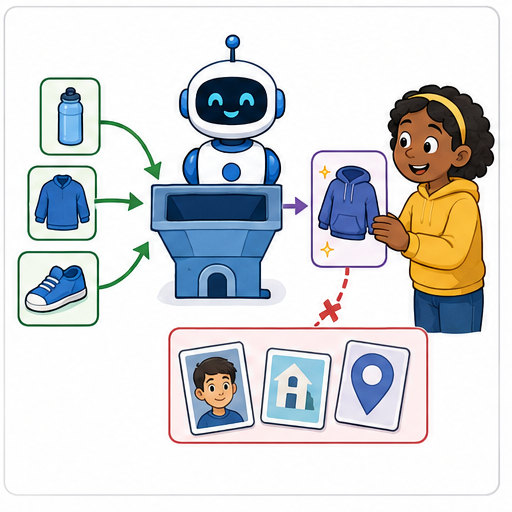
Learner name:
Readiness for the connected explanation
A recommender always reports no match. Why is a count of zero incompatible suggestions insufficient to show that it helps users?
This week’s end goal
By the end, I can specify valid inputs, exact outputs and a manual baseline.
Student lesson · 2 of 16
Notice the evidence
PICTURE STORY
Look Closely Before You Explain
Pictures give clues; evidence tells us what the clues mean.

What do you notice?
Name three visible details without explaining them yet.
Circle the detail most connected to the system's decision.
Name one detail that may be decoration or distraction.
Make a first prediction and state the clue that supports it.
My observations, prediction, and evidence:
A closer explanation
Last week we identified a difficulty: some fictional activity choices did not fit the available time or room conditions. Now define the task precisely enough that two reviewers can agree whether an output is correct. A requirement such as “suggest a good activity” is too vague. State which inputs are accepted, what counts as compatible and what to do when no option fits.
For this paper project, a valid request contains an available time from 0 to 30 whole minutes and a quiet-room requirement written Yes or No. Yes means the activity must be marked quiet. No means either quiet or non-quiet activities are permitted; it does not mean noise is required. A missing or invalid value needs clarification, not a guessed value or a no-match claim.
A compatible activity takes no more than the available minutes and meets the quiet-room condition. If several activities fit, suggest the first in catalogue order. If none fits a valid request, report no match. Give a brief reason. This is a suggestion only: it does not book resources, tell anyone to begin or guarantee enjoyment.
Student lesson · 3 of 16
See how it works
VISUAL MECHANISM
Input → Process → Output
Follow the information instead of imagining magic inside the machine.
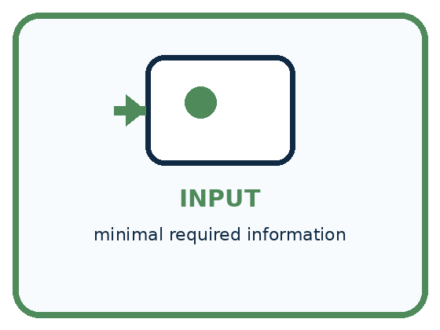
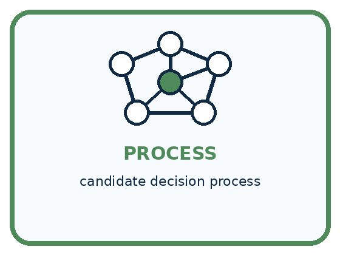
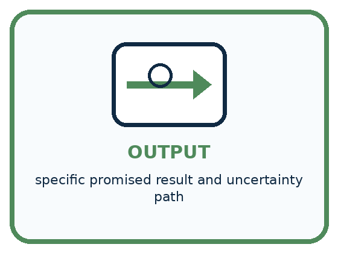
INPUT minimal required information
PROCESS candidate decision process
OUTPUT specific promised result and uncertainty path
Draw a fresh example with all three stages:
A closer explanation
| Catalogue order and activity | Minutes required | Quiet activity |
|---|---|---|
| B1 Bookmark drawing | 10 | Yes |
| B2 Story circle | 8 | No |
| B3 Pattern puzzle | 12 | Yes |
| B4 Tower challenge | 15 | No |
These four rows are the complete approved catalogue for the paper model. Treat their times as fixed task values, not measured guarantees about real pupils. All required materials are assumed available. The catalogue order B1, B2, B3, B4 is the tie rule; it is not a claim that B1 is everyone’s favourite.
For 10 minutes with quiet required, B1 fits because 10 is no more than 10 and B1 is quiet. B2 fails the quiet requirement. B3 and B4 take too long. For 8 minutes with quiet not required, B2 fits; B1 takes too long. A request for 7 minutes has no compatible activity in this catalogue, even when quiet is not required.
Check each condition. A fast activity can still fail the quiet requirement. A quiet activity can still take too long. Exact equality is allowed: an activity listed as 10 minutes fits 10 available minutes. A blank time is different from a valid time of zero.
Connect the picture and the explanation
Point to the input, the deciding step and the result in this week’s visual. Explain the same step in ordinary words. A picture helps when you can say what each part represents.
Student lesson · 4 of 16
Compare the cases
PICTURE GALLERY
Four Cases, Four Clues
Use the visual cue, then read the evidence carefully.
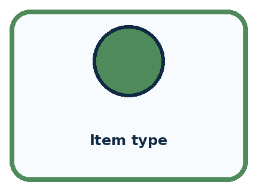
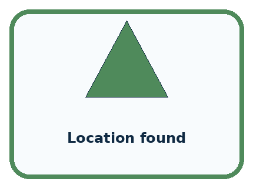
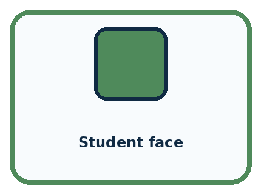
CASE 1 — Item type Clue: directly supports bin choice. Meaning: required candidate.
CASE 2 — Location found Clue: may disambiguate. Meaning: optional candidate.
CASE 3 — Student face Clue: not needed. Meaning: remove.
CASE 4 — Guaranteed owner Clue: unsupported promise. Meaning: revise output.
Which two pictures are easiest to confuse? What evidence separates them?
Change one thing in the pictured case
Change: Change request 6 to 5.
Prediction: The baseline returns B1.
Reason: Its capacity equals the request, and at least includes equality.
Student lesson · 5 of 16
Words that unlock the idea
VOCABULARY
Words You Can See and Use
The badge is a memory cue; the definition does the real thinking work.
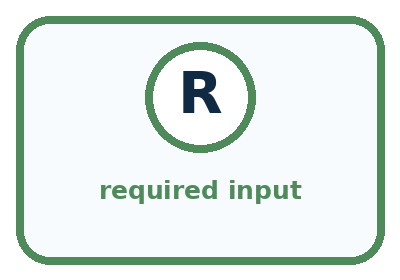
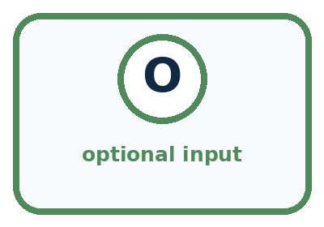
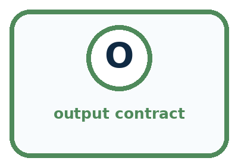
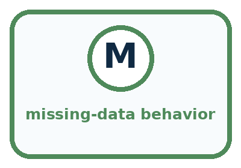
| Word | Meaning | My example |
|---|---|---|
| required input | information necessary for the process | |
| optional input | information that may help but is not required | |
| output contract | specific result the system promises to produce | |
| missing-data behavior | what happens when an input is absent |
Misconception detective
CLAIM TO REPAIR More inputs make every design more accurate.
Use one vocabulary word and one piece of evidence to repair it:
Words used in the closer explanation
| Word | Meaning |
|---|---|
| Requirement | A precise condition that the solution must satisfy |
| Baseline | A defined starting method used for comparison |
| Compatible | Meeting all the stated conditions of the request |
| Tie rule | A stated way to choose when several options qualify |
| Acceptance check | A check of whether a result satisfies a requirement |
Student lesson · 6 of 16
Follow a worked example
WORKED EXAMPLE
Watch the Reasoning, Not Just the Answer
Every step connects a claim to observable evidence.

STEP 1 — OBSERVE minimal required information
STEP 2 — TRACE candidate decision process
STEP 3 — CONCLUDE specific promised result and uncertainty path
What new evidence could change this answer?
A closer explanation
The manual checklist baseline
Write the request at the top of a sheet. If it is invalid, record what needs clarification and stop. Otherwise mark each catalogue row as compatible or incompatible using both conditions. Circle the first compatible row in order, or write no match if every row fails. Record the output and its reason. This checklist is our baseline.
The baseline can be correct on all cases when applied carefully. A prototype that matches it has not demonstrated better compatibility. It may still be easier to use or faster to trace, but those are separate claims that need their own measures. Do not make the baseline skip a condition just to make the prototype look better.
Learn from the worked case
Cover the result before checking it. Say what is given, choose the procedure, and follow one step at a time. Then uncover the result and explain your first mismatch. Ask why a step is allowed, not only what number it produces.
A pictorial worked case: Choose Inputs and Outputs
A fictional classroom chooses a storage bin for model parts.
The facts we will use
Catalogue order: B1 capacity 5, B2 capacity 9. Valid request is a whole part count 1–12.
Return first bin with capacity at least the count; none if neither fits; clarify invalid input.
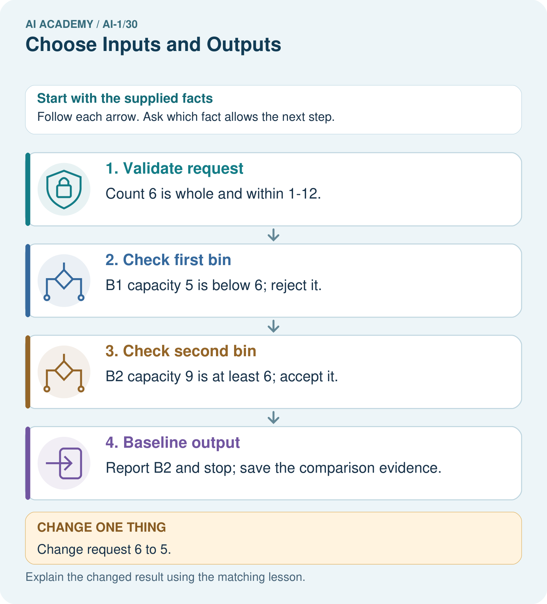
Read the picture one step at a time
Why this result follows
The baseline is an ordered catalogue scan, not a preference ranking. It makes expectations testable before a prototype is built. Count 10 is valid but has no matching bin; that differs from a blank count, which fails the input contract. Both situations need explicit output behavior.
What this example does not establish
Bin capacity is the only supplied fitting criterion; weight or shape suitability cannot be inferred.
Read the labelled picture: Trace requests 10 and blank. Why should they not receive the same explanation?
Change one thing: Change request 6 to 5. Predict the result before checking the explanation. What remains the same?
Student lesson · 7 of 16
Find and repair a mistake
COMPARE
Same Result, Different Reason
A comparison helps reveal the true concept boundary.
| Case | Evidence | What it shows |
|---|---|---|
| Item type | directly supports bin choice | required candidate |
| Location found | may disambiguate | optional candidate |
| Student face | not needed | remove |
| Guaranteed owner | unsupported promise | revise output |
Repair two tempting claims
CLAIM A More inputs make every design more accurate.
Repair:
CLAIM B An output label can promise more than the process actually knows.
Repair:
A closer explanation
Your project record now needs the problem brief, this catalogue, the input rules, compatibility rule, tie rule and clarification behaviour. Add a baseline sheet with one row per request: supplied input, actual output, reason and whether the requirements were met. Record the method and catalogue version so a later reader can repeat the comparison.
For this week, complete the baseline before building a new process. Next week you will design the full decision path, including invalid input and no-match cases. Keep compatibility claims within the paper model. Real materials, changing room conditions and pupils’ preferences would require more information and a revised task.
Student lesson · 8 of 16
Practise together
GUIDED PRACTICE
Try It, Check It, Explain It
Use support now so you can succeed independently later.

Explain how the picture story demonstrates this idea: A useful design makes required information and promised result explicit.
Use a fresh example to explain required input.
Trace a new input → process → output example.
Find and repair the error in: An output label can promise more than the process actually knows.
Invent one edge case and name the safe response.
A closer explanation
Both methods must receive the same request values and the same catalogue version, and both must be judged by the same requirements. Record actual results, including errors, no-match outputs and clarification requests. A valid no-match result can pass; a no-match result that overlooks a fitting activity cannot. A guessed answer to invalid input fails the clarification requirement.
The cases used while designing are development cases. Keep the teacher’s reserved final cases unopened until the process is fixed and ready for evaluation. Do not change the requirements after seeing a poor result simply to count that result as a success. If a real need changes, record the new requirement and rerun the relevant checks.
Practise with less help: Run the baseline on three requests
Use workbook W2 for the connected example “Requirements and a simple baseline”. First fill the input and rule boxes. Try the middle steps before asking for a hint. After a hint, try the next step yourself.
| Plan | Do | Check |
|---|---|---|
| What is given? Which rule or procedure applies? | Record each intermediate step. | Does the result follow? What remains unknown? |
Explain your trace to a partner. Your partner points to one step to check. Swap roles on the next case. Each person writes their own explanation.
Check your reasoning
Use the worked case for Requirements and a simple baseline. Proposed explanation: “Quiet required No excludes quiet activities”. Decide whether this explanation is supported. Point to the step or supplied fact that decides; explain your repair if needed.
Answer on your own before discussion. If you are unsure, say which step you need help with.
Explain the picture
Trace requests 10 and blank. Why should they not receive the same explanation?
This is supported practice. Keep the separately named independent case for an attempt before feedback.
Student lesson · 9 of 16
Run the investigation
EXPLORER LAB
Two-Design Input Audit
Predict first, test honestly, and explain what the evidence means.

State your prediction before the result is known.
Complete the task: Sketch two designs and remove an unnecessary input.
Keep a normal case and an edge case clearly separated.
Record what happened—even when it does not match your prediction.
Explain the result, one limitation, and the next useful test.
| Case | Prediction | Observed result | What it means |
|---|---|---|---|
| Normal | |||
| Edge |
Plan → try → check
Before trying: what do I expect, and why? While trying: which step could first go wrong? Afterwards: what did I actually observe, and what should change? Keep “not run” if you only traced the procedure.
Student lesson · 10 of 16
Build your understanding
PRACTICE LADDER
Climb from Recall to Defense
Each step asks for a stronger kind of understanding.

RECALL Define required input.
EXPLAIN A useful design makes required information and promised result explicit.
TRACE Show the input, process, and output.
DIAGNOSE Repair: More inputs make every design more accurate.
TRANSFER Apply the idea to a new home or classroom case.
CREATE Design one revealing test.
DEFEND Give a claim, evidence, mechanism, limit, and safe action.
Student lesson · 11 of 16
Connect your project
PROJECT
Helpful Classroom Sorter
Build one coherent system across the year, one evidence-based decision at a time.

What real classroom need does this serve?
What information is necessary—and what should stay private?
What happens inside the process?
What normal and edge cases will you test?
When should it say not sure or ask a person?

My project decision:
Evidence for your project
Document sorter schema, catalogue order, acceptance rule and all output types; use a manual trace as the comparison baseline.
Student lesson · 12 of 16
Show what you know
MASTERY
Fresh-Case Independent Proof
Complete this after teaching and guided practice have ended.

□ Name or draw the fresh case.
□ Trace input, process, and output.
□ State the conclusion and strongest evidence.
□ Name one limit, failure, missing clue, or fairness/privacy concern.
□ Explain one safe next action or improvement.
Independent evidence:
My level: □ Not yet □ With one hint □ Independently □ I can teach it
Student lesson · 13 of 16
Study a complete case
Week 30 Worked case
Use the supplied details to practise the weekly concept before attempting the independent question. This case extends the illustrated lesson.
The situation
A sorter suggests paper or plastic trays using material observations.
The question
Name an input, output and unnecessary input.
Worked explanation
Input: material or a suitable image. Output: tray suggestion. Home address is unnecessary. Uncertain material needs review.
Explain it in your own words
Which detail supports the answer, and why does it matter?
Trace the supplied case visually
Design a sorter with only relevant inputs
| Evidence or stage | Value or result |
|---|---|
| Input | Material or a suitable image |
| Decision | Paper, plastic or uncertain |
| Output | Tray suggestion |
| Review | Ask a person when material is unclear |
A sorter suggests paper or plastic trays using material observations.
Name an input, output and unnecessary input.
Input: material or a suitable image. Output: tray suggestion. Home address is unnecessary. Uncertain material needs review.
Student lesson · 14 of 16
Try a new case independently
Independent case: Build a baseline for a different catalogue
A paper room recommender uses R1 first, capacity 6, quiet Yes; then R2, capacity 10, quiet No. Valid requests give a whole group size from 1 to 12 and Quiet required Yes or No. A room fits when capacity is at least group size and the quiet condition is met; choose the first fitting room. Record outputs and reasons for 6 people Yes, 8 people No and 8 people Yes. Explain how a manual baseline can be compared fairly with a prototype. No real booking is allowed.
Attempt this case before feedback. Record any help. Earlier examples below are further practice; a case already practised with feedback cannot establish fresh transfer.
Week 30 Independent application
Close the worked explanation. Apply the idea to this different question without copying.
A paper sorter must suggest pencil tray or book shelf. Choose one needed input and state the output. What should happen if the picture is blocked?
My answer, with a trace, calculation or supporting evidence
Create and test
Change one relevant detail. Predict the result before testing. Include a boundary or missing-information case when it helps reveal a limit.
My changed input and expected result
Connect to your project
Freeze the sorter's v1 input list, output contract, and not-sure behavior.
The evidence I will keep
Your teacher has the independent answer and scoring criteria. Complete the matching workbook week to keep your practice evidence together.
Transfer practice from the original programme
Design a paper/plastic sorter that receives an object description. Include a mixed paper-and-plastic cup. Specify inputs, outputs and the uncertain-case action. Is the owner's name useful?
Use feedback to improve
Attempt the independent case before hints. Record whether you worked alone, used a hint or followed a model. After feedback, fix the first unsupported step and explain why it changed. A later check uses a changed case, not a copied answer.
Student lesson · 15 of 16
Your lesson route
Start with this question: A fictional classroom chooses a storage bin for model parts.
| By the end, I can | How I will show it |
|---|---|
| Turn the project outcome into precise input and output requirements | Explain the deciding step, show a trace or test, and state one limit. |
| Apply a simple manual baseline to valid requests and record its results | Explain the deciding step, show a trace or test, and state one limit. |
| Plan a fair comparison using the same catalogue, requests and judging rules | Explain the deciding step, show a trace or test, and state one limit. |
Remember → watch and explain → try with help → investigate → try independently → keep project evidence. Your teacher may spread this lesson across several classes.
Keep your first prediction. Compare it with what the evidence shows and explain any change.
Student lesson · 16 of 16
Finish and return
Close your notes. Explain this goal in your own words: Turn the project outcome into precise input and output requirements
If you are unsure, return to the worked picture and explain one arrow. If you are ready, change an input or assumption and justify your prediction.
Save your workbook evidence. At the next review, try a different case before opening your old answer.